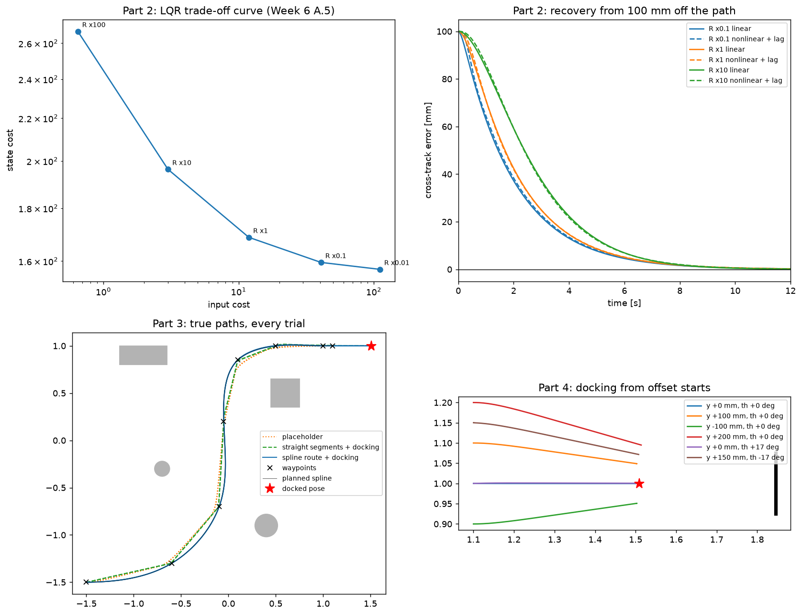
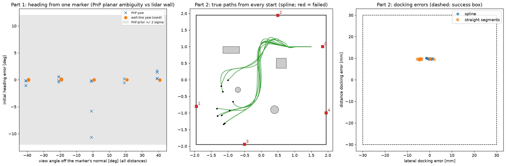

Criterion D
Controller design, tuning and tracking results
The 2-state error model (Weeks 5 D, 8 B), LQR with ct.dlqr and Bryson's rule (Week 6 A.4,
A.5), the Lyapunov heading law (Week 6 B.6), the "drive and turn" placeholder used as a baseline (Week 8 C.4),
and position-based visual servoing (PBVS) to an ArUco tag (Week 9 D). The occupancy grid and A* planner are not
from the tutorials. They are a researched minimal extension so that the robot can navigate with no map as required for hardware.
Code: control.py,
navigation.py,
planning.py.
Evaluated by tests/test_control.py and tests/test_navigation.py.
Everything on this page runs on the estimated pose and sensor data ONLY.
| Mode | What the robot does |
|---|---|
| search | turns on the spot (0.7 rad/s) until the reference marker is in view |
| localise | stands still for 1 s (10 frames) while the estimator initialises (C) |
| look | turns to where the dock marker should be and looks for up to 1.5 s. One marker leaves the rotation about it unobservable. A second fixes it. |
| plan | plans to the pre-dock pose (0.75 m out on the dock marker's normal) on its own LiDAR map |
| turn/track | a Lyapunov turn on the spot when needed, then LQR path following along the spline |
| dock | Week 9 visual servoing on the dock marker |
| find | the dock marker has not been seen for 3 s at the pre-dock pose. Turn until it is seen, hold 1 s while the EKF corrects, and then replan |
| back off | the estimate puts the robot more than 4 cm off the dock normal while docking (for example after a push): reverse to 1.15 m, replan and dock again (at most 3 times) |
On the 2-state cross-track/heading model (A), discretised by zero-order hold at T = 0.05 s:
\[ \dot e_y = v\,e_\theta, \qquad \dot e_\theta = \omega - \omega_r, \qquad \omega = v\kappa - K(v)\begin{bmatrix} e_y \\ e_\theta \end{bmatrix}. \]ct.dlqr
for the speed being driven and cached per cm/s.| v [m/s] | K (ey, eθ) | closed-loop |z| | time constants [s] | damping |
|---|---|---|---|---|
| 0.04 | (9.28, 2.79) | (0.993, 0.867) | (7.15, 0.35) | 1.0 |
| 0.08 | (9.25, 2.92) | (0.986, 0.867) | (3.56, 0.35) | 1.0 |
| 0.15 | (9.20, 3.11) | (0.974, 0.869) | (1.88, 0.36) | 1.0 |
| 0.20 | (9.16, 3.25) | (0.965, 0.871) | (1.39, 0.36) | 1.0 |
The loop is stable at every speed, and both poles are real, meaning there is no overshoot. The slow, cross-track mode's time constant scales with 1/v - the robot can only correct a lateral error by driving, which is the nonholonomic constraint again. The fast heading mode (about 0.35 s) barely depends on speed. Both are well above the wheels' 0.11 s lag.
v = 0.15 m/s, starting 100 mm off the path; "nonlinear + lag" adds the 0.11 s wheel lag to the unicycle.
| R scale | State cost | Input cost | Peak ω | Settle to 5 mm | With the lag |
|---|---|---|---|---|---|
| 0.01 | 157.1 | 111.04 | 5.07 rad/s | 5.80 s | 5.95 s |
| 0.1 | 159.5 | 40.71 | 2.49 rad/s | 5.85 s | 5.95 s |
| 1 (used) | 168.7 | 11.91 | 0.92 rad/s | 6.05 s | 6.10 s |
| 10 | 196.3 | 3.01 | 0.31 rad/s | 6.55 s | 6.55 s |
| 100 | 267.0 | 0.65 | 0.10 rad/s | 8.75 s | 8.65 s |
The reason for Bryson's choice: A 100× more aggressive controller cuts settling only from 6.05 to 5.80 sec, but multiplies the peak steering command 5.5×, to 5.07 rad/s. That is beyond the 1.58 rad/s that the wheels can deliver. Cross-track recovery is limited by forward speed, not steering effort. Every design settles within 0.15 s of the linear prediction with the lag included so leaving the lag out of the model is justified.

tests/test_control.py. Top: the LQR trade-off curve, and recovery from 100 mm off
the path, linear against nonlinear with the lag. Bottom left: true paths of the route missions for the spline,
straight segments and the placeholder. Bottom right: docking from offset starts.At the pre-dock pose the robot turns to face the station, then steers on the camera's view of the dock marker (not the EKF):
\[ v = \lambda_v (z_M - d^*), \qquad \omega = -\lambda_\omega \operatorname{atan2}(x_M, z_M), \qquad \lambda_v = 0.5,\ \lambda_\omega = 1.5,\ d^* = 0.25\ \text{m}. \]Here xM and zM are the marker's lateral offset and depth in the camera frame. v is clipped to [−0.05, 0.1] m/s and ω to ±0.8 rad/s. d* is set by geometry - the marker can only be decoded while its 0.2 m plate fits in the 480 px image height, Z ≥ 0.2 × 530/480 = 0.22 m. The robot counts as docked within 10 mm in both depth and lateral offset.
| Start offset from the pre-dock pose | Docked | Time | Distance | Lateral | Heading |
|---|---|---|---|---|---|
| none | yes | 8.8 s | 9 mm | 0 mm | 0.0° |
| y +100 mm | yes | 8.8 s | 6 mm | 49 mm | −8.2° |
| y +200 mm | yes | 9.1 s | −4 mm | 95 mm | −16.0° |
| θ +17° | yes | 9.9 s | 9 mm | 1 mm | −0.1° |
| y +150 mm, θ −17° | yes | 10.0 s | 2 mm | 72 mm | −12.0° |
A rotated start docks perfectly. A start off the normal docks facing the marker, but about half the offset remains sideways, with about 8° of skew per 100 mm. This matches the Week 9 D3 prediction: the law regulates only range and bearing and a unicycle cannot move sideways. The full mission still docks within millimetres because the LQR tracker, steering on the EKF estimate, delivers the robot to the pre-dock pose on the normal. Docking accuracy is therefore set by estimation plus tracking error at that point. That is why the explore mission adds back off when the estimate shows the robot pushed off the normal.
| Spline paths (default) | Straight segments | |
|---|---|---|
| Successful; collisions | 10/10; 0 | 10/10; 0 |
| Mission time | 44.1s | 47.3s |
| EKF RMS / worst | 6/29 mm | 5/26mm |
| Closest approach beyond 0.25m | 5.8cm (per-mission minimum, mean 9.2cm) | 3.0cm (mean 7.4cm) |
| Docking |error| | 9.8mm, 0.8mm lateral, 0.1° | 9.6mm, 3.3mm lateral, 0.6° |
The spline is 3 s faster (no stopping to turn at corners), keeps further from obstacles, and arrives along the dock normal with a smaller lateral error.

tests/test_navigation.py. Left: initial heading error from one marker, PnP against the
wall line. Middle: true paths from every random start (all docked). Right: docking errors for spline and
straight segments inside the 30 mm success box.| Controller | Time | Path RMS / max | ω RMS | dω/dt RMS | Docking |
|---|---|---|---|---|---|
| spline LQR + dock | 39.9s | 1.8/4mm | 0.12rad/s | 0.26rad/s² | 10mm, 0mm, ≤ 0.1° |
| straight-segment LQR + dock | 49.9s | 4.1/17mm | 0.20rad/s | 1.47rad/s² | 10mm, 1–2mm, 0.2–0.3° |
| Week 8 C.4 placeholder | 31.2 s | 14.1/51mm | 0.22rad/s | 1.40rad/s² | does not dock |
The spline tracks 8× tighter than the placeholder and 2.3× tighter than straight segments, is 5.7× smoother in dω/dt, and saves 10 s. Path error is the true distance from the planned path while tracking, so it uses ground truth (for evaluation only).
Anthony used a cubic-spline trajectory with curvature feed-forward, a route with a clearance check, and a 3-state LQR tracker on a timed reference. We compared both his and Kaja's straight-line before merging:
src/control/trajectory.py), the route, and
the clearance check.